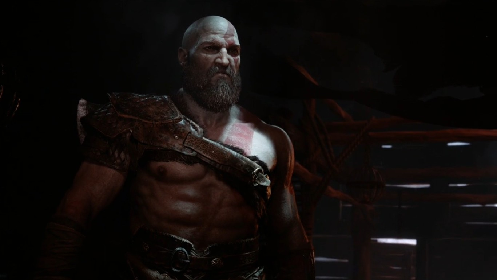

El nuevo God of War es anunciado
oficialmente con un asombroso gameplay [E3 2016]

La conferencia de Sony del E3 2016 no ha podido
empezar de una mejor forma que con un anuncio
esperado por muchos como ha sido el del nuevo
'God of War' para PlayStation 4. Sony no ha ofrecido
ningún detalle oficial sobre esta nueva entrega,
pero sí nos ha dejado con un espectacular gameplay
de diez minutos de duración.
En él podemos ver a un Kratos muy barbudo que es padre de un
hijo al que está enseñando a pelear y cazar. Durante su
adiestramiento vemos como se enfrentarán contra unas criaturas
mágicas formadas con ramas y hasta bestias gigantes, todo con una
ambientación nórdica, como aseguraban los rumores.